Plant. Nurture.
Protect.
We plant trees with community participation, tag them for monitoring, and care for them as they grow into lasting green cover.
Our plantation driveROOTED IN PIMPRI, PUNE
प्रकृति की रक्षा, मानवता की सेवा
A community coming together for greener surroundings, brighter futures for children, and dignity for our elders.
See our workSmall acts of care.
A shared responsibility.
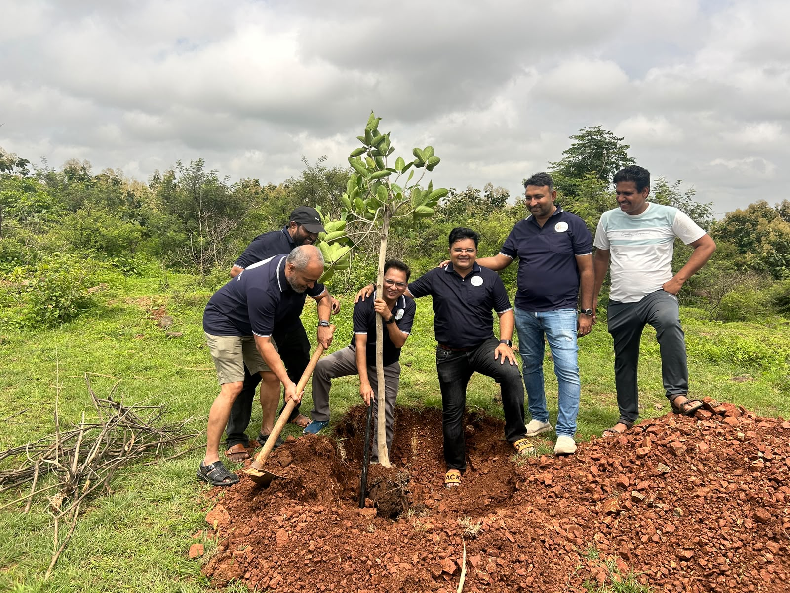
WHO WE ARE
Shwas means “breath”. It reminds us that life depends on nature—and on each other.
Shwas Foundation is a volunteer-driven social welfare initiative based in Pimpri, Pune. We bring members, volunteers, and local residents together to protect the environment and support people in our community.
A greener, more caring society where every child has the support to learn and every elder lives with dignity and companionship.
OUR FOCUS
Our mission connects a healthier environment with a more caring community.
We plant trees with community participation, tag them for monitoring, and care for them as they grow into lasting green cover.
Our plantation driveOur mission is to support students in Zilla Parishad schools with the resources and encouragement they need to continue learning with confidence.
Our school visit ↗We are committed to reaching out to senior citizens in care centres with support, respect, and time spent together.
OUR COMMUNITY IN ACTION
A day of service to nature, marking Independence Day in Alandi.
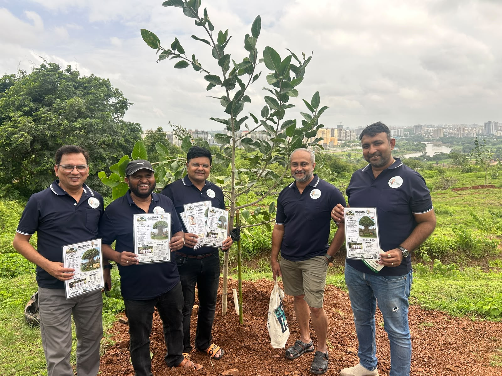
15 AUGUST 2026 · ALANDI, PUNE
Foundation members, Maulivan volunteers, and local residents planted 47 Banyan and Jamun saplings on a hillside opposite Gajanan Maharaj Mandir.
Saplings were tagged with Maulivan identification plates to support future monitoring and care. A Sanskar workshop also explored the science and cultural significance of tree plantation.
OUR WORK IN ACTION · 30 SEPTEMBER 2026
A school visit bringing Shwas Foundation members, teachers, and children together.
SUPPORTING CHILDREN
Shwas Foundation members distributed water bottles to children during a visit to a Zilla Parishad school. These moments capture the welcome from teachers, the distribution, and time spent together.
Explore the photographs ↓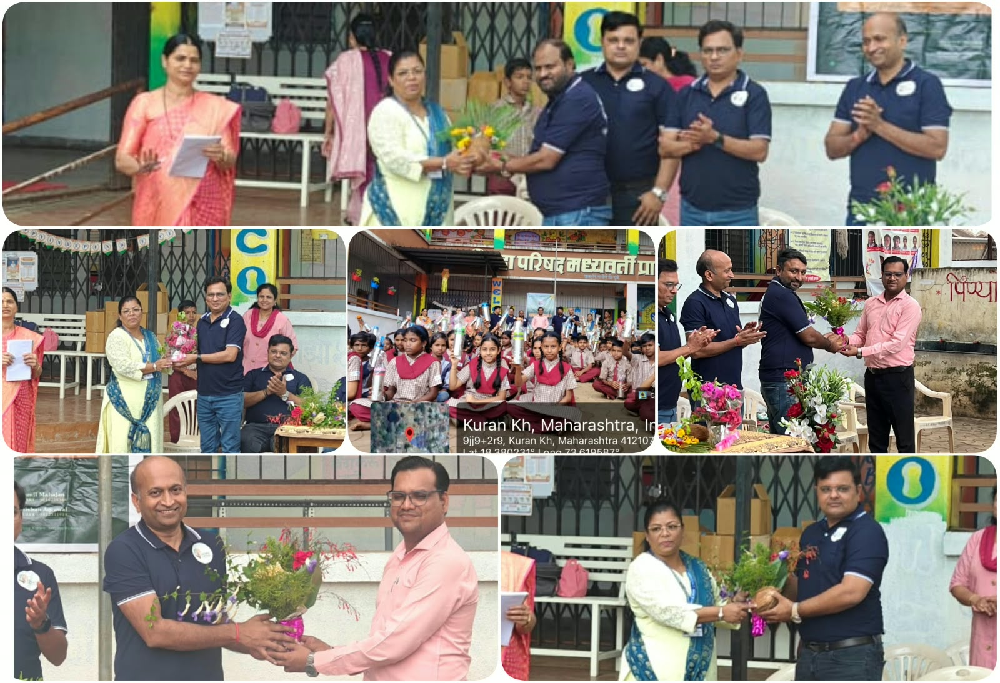
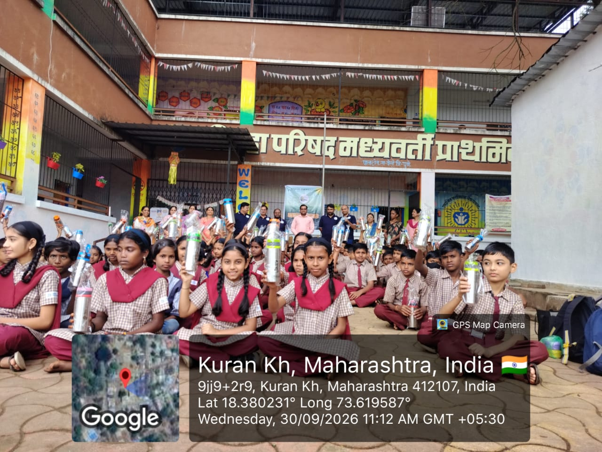
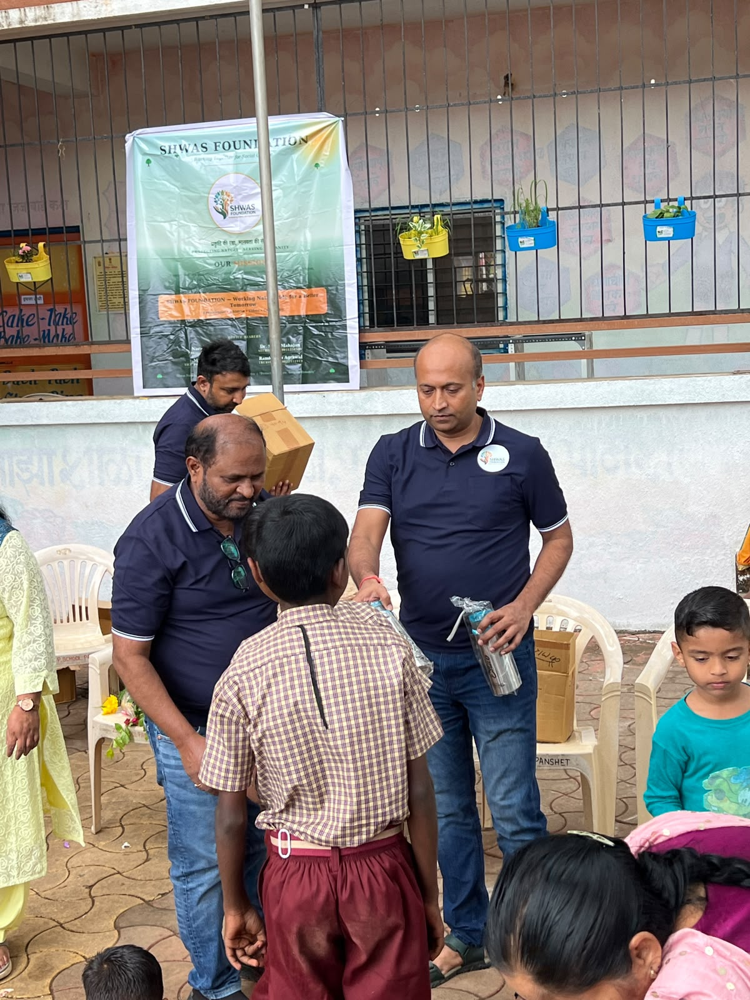
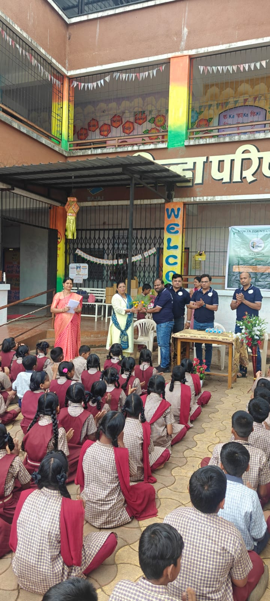
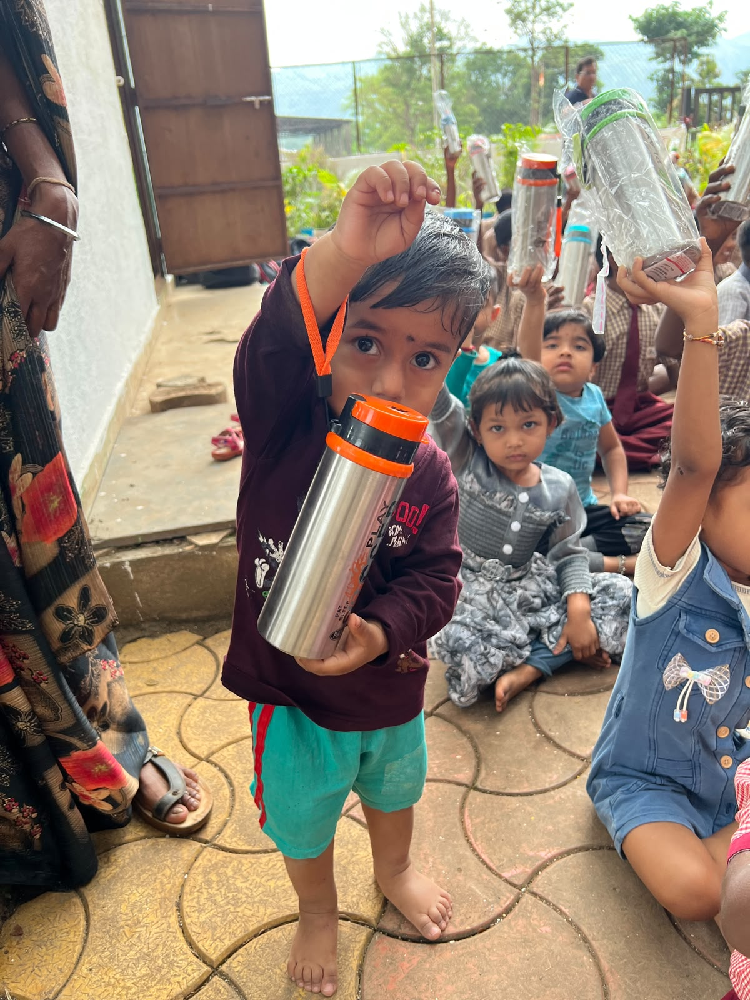
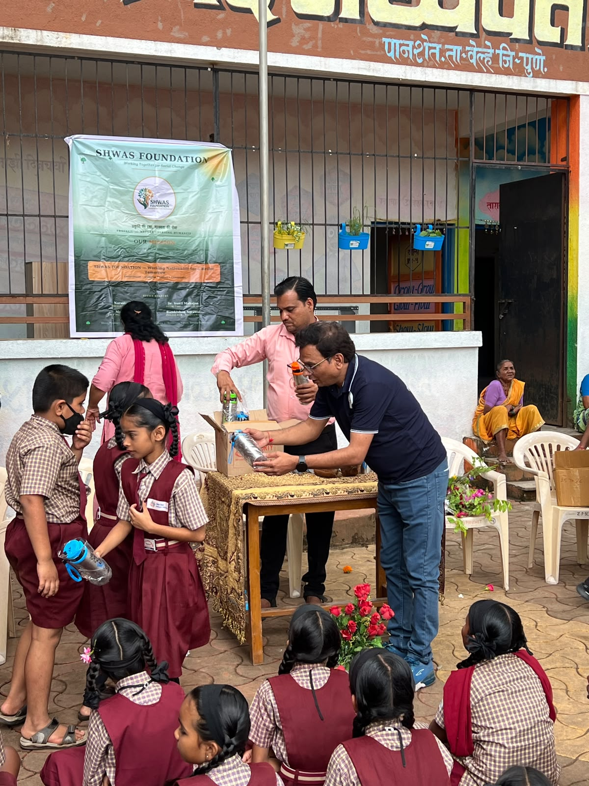
OUR PEOPLE
Meet the trustees behind Shwas Foundation.
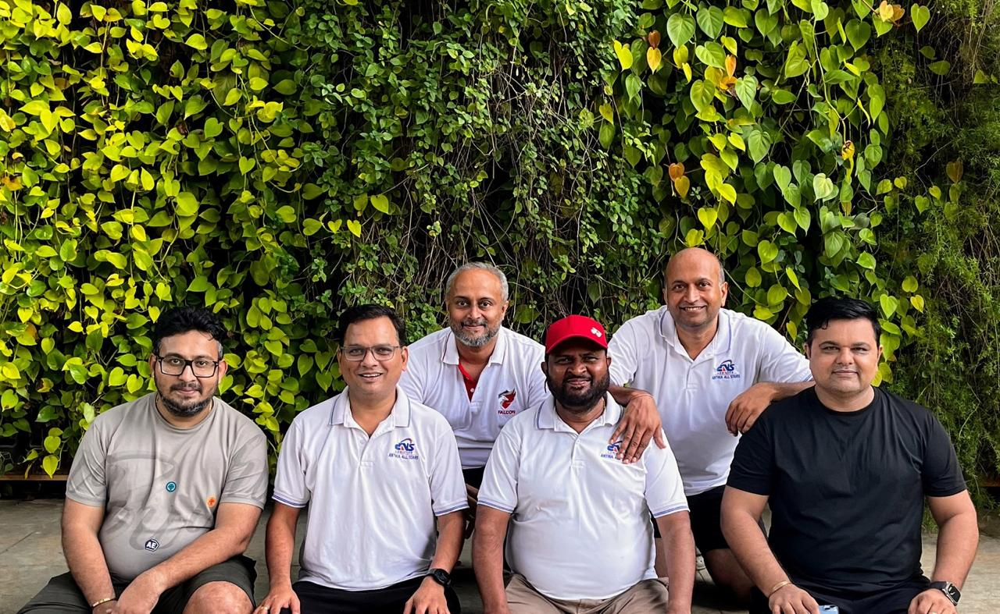
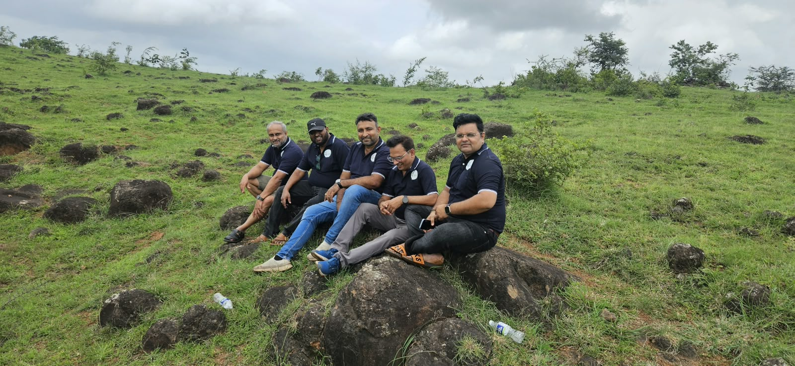
Chairman
Vice-Chairman
Secretary
Treasurer
Member
Member
Member
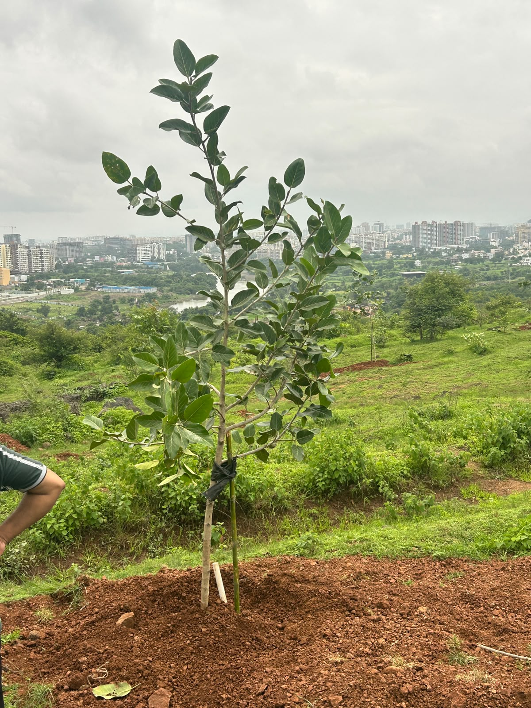
MAKE ROOM FOR SERVICE
Our work grows through members, volunteers, and neighbours who care. Membership is open to adults aged 18 and above with an interest in social work, subject to Executive Committee approval.
Bring your ideas, participate in community activities, and help us care for nature and one another.